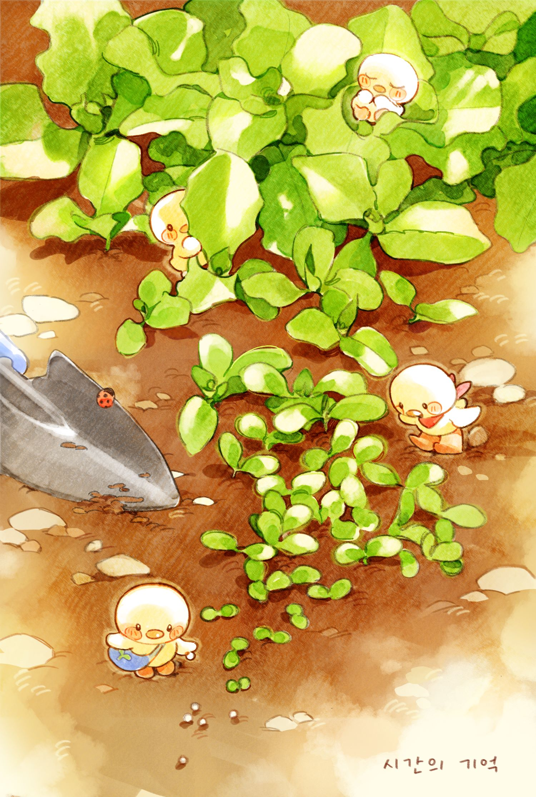
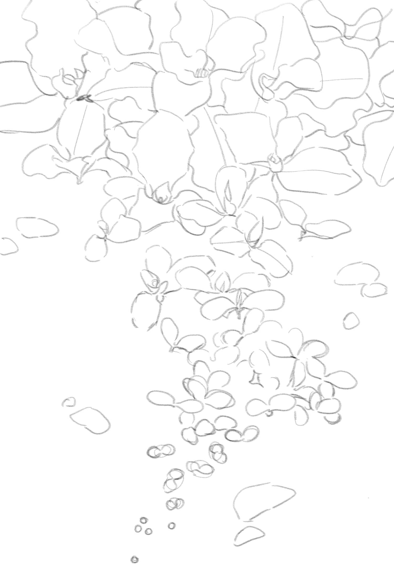
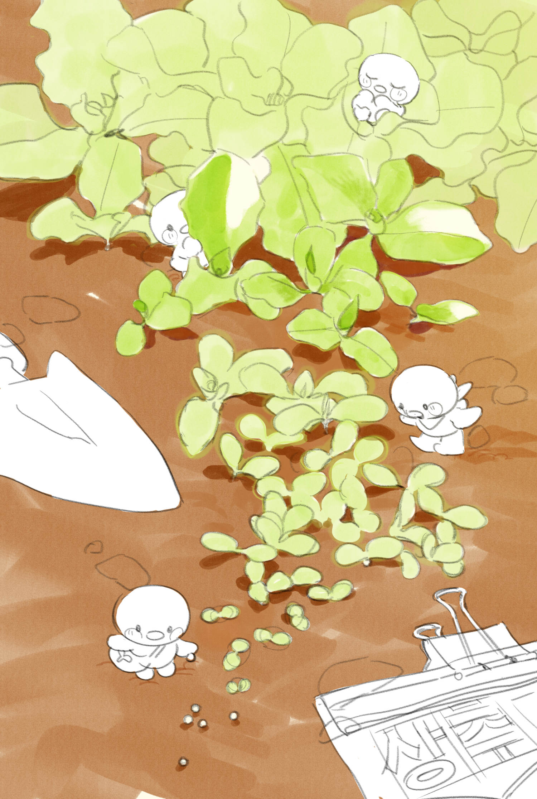

식물을 키우며 성장과정을 기록했던 경험을 바탕으로 "시간의 기억"이라는 주제를 동화 같은 따뜻한 감성으로 표현한 일러스트

CONCEPT & SKETCH
시간이 흐름에 따라 변화하는 식물의 형태를 한 화면에 배치하여 시간의 흐름을 나타내고자 하였습니다. 시선의 흐름에 따라 씨앗에서 싹이 트고, 점점 잎이 자라나며 성장하는 과정을 확인할 수 있도록 스케치를 진행했습니다.
식물의 배치나 형태가 지나치게 단조로워지지 않도록 식물의 특징을 자세히 관찰하여 생동감 넘치게 표현하고자 했습니다.

PROCESS
밑색을 칠해 전체적인 색감을 통일하고, 캐릭터와 소품 등 장식적인 요소를 추가적으로 배치하였습니다. 각기 다른 동작을 하고 있는 오리 캐릭터는 식물이 자라는 과정마다 배치하여 자연스럽게 시선을 유도하고, 보는 이의 흥미를 끌도록 했습니다.

FINISH
아날로그 특유의 따뜻하고 부드러운 동화 삽화 같은 질감을 내기 위해 엷은 색상을 쌓아가며 채색하고, 텍스처를 더해 수채화와 색연필화 같은 느낌을 주었습니다.